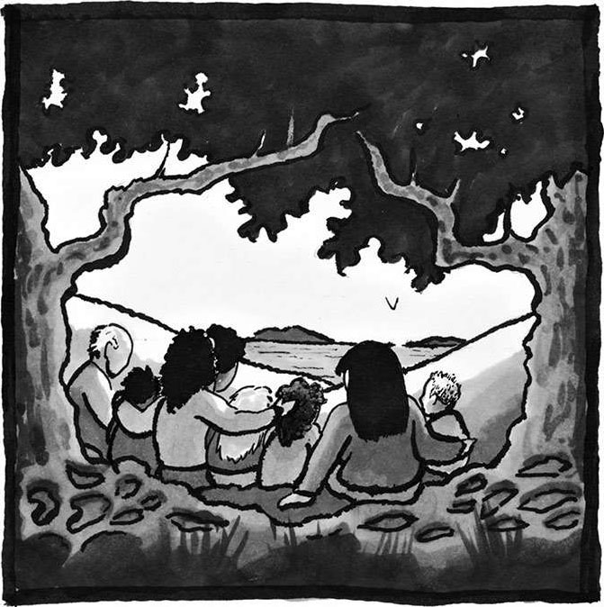

13 爱
如果我的言语当中没有任何爱意，那么不管我说的是哪国语言，就算我能够像天使一样说话，我的言语跟嘈杂的锣鼓声也没有什么区别。
——保罗（基督教使徒）1
我们必须记住，教书育人的真正目的，不仅在于让他人掌握智慧，还在于帮助他人塑造美好的品性。所谓合格的教育，不仅要赋予他人专注做事的能力，还要赋予他们辨别事物的能力，好让他们能够找到一个值得为之付出的目标。
——马丁·路德·金2
读博士研究生的时候，我整个人曾一度处于崩溃的边缘。当时我已经在某个研究课题上耗费了两年的心血，可突然之间我发现，我的论文中存在一个根本性的错误，导致整个理论完全站不住脚，这两年的付出可以说是毫无价值。我只好想方设法给自己的工作找到一些意义，好让自己的心血没有白费。于是我试着把自己发现的这个反例发表出来，结果却遇到了更让人绝望的事：早在 20 年前就已经有人在某个我从来没听说过的小众期刊上发表了同样的反例。
毫不夸张地说，博士学位就是我的一切，我的努力和奋斗全都是为了它。现在博士学位近在咫尺，按理说我没有任何理由放弃这个目标——可事实上，当时的我实在是太绝望了，我真的在认真考虑是不是应该彻底告别数学事业。

我从小就喜欢研究数字规律，喜欢挑战那些难度颇高的题目。我会在课余时间阅读马丁·加德纳所著的各种数学读物。我喜欢探索数学，我享受数学探索者这个身份。还记得在高中的时候，我拿到了一本研究生的数学教材，上面的文字我一点都看不懂，但我没有气馁，反而迫切地想要弄懂它。数学博士学位既是我个人的梦想，也是父母对我的期冀。在我父母看来，高学历就是一个人取得成功的标志：他们是来自中国的移民，生活条件十分艰苦，在攻读高等学历的同时，往往还要做好几份兼职来维持生计。可即便这样，他们也没有放弃。所以不难想象，当得知我被哈佛大学录取的那一刻他们有多么激动。可是另一方面，我的家在得克萨斯州，波士顿离我们实在是太远了。在我离家远读的那一天，我那不幸罹患渐冻症的母亲悲痛欲绝，泣不成声。那段时间，在众多因素的影响下，我的意志极为消沉。在刚到哈佛大学的头两个月里，我在日记中写下了这些文字：
此时此刻，我感到茫然无助，进退两难，我不知道该怎么办。虽然我的家人希望我继续念书，可我总觉得我应该待在家乡，尽我所能地为家里做点什么。
虽说大部分一年级新生都会产生自我怀疑，可我总觉得我的情况比别人严重得多。我感到课业异常繁重，我原以为我会干劲十足，可不知怎的，我的积极性并不高。我想不通问题到底出在哪里。
我的信心产生了动摇。我开始怀疑自己是不是真的想成为一名数学家。可是，如果放弃数学的话，我又不知道自己该干点什么、能干点什么。
之后的三年，这种感觉一直没有消失，我一直生活在自我怀疑的旋涡中。博士生最主要的工作就是找到一位教授作为自己的导师，然后跟着他写一篇专题论文（必须是原创内容，必须是全新的研究领域），只有这样才能成功拿到博士学位。其间，我曾跟过好几位导师，我能明显地感觉到他们对我的评价都不是太高。此时此刻，我彻底失去了自信。
我为什么要花费这么多心血去读博？博士学位对我来说到底意味着什么？为了找到答案，我不得不解决另一个更基本的问题，也就是本书开头那个问题：
为什么要学数学？
是为了声名远扬，获得一些外在收益？是为了证明自己的数学天赋比其他人更高？是为了和别人攀比？还是为了探寻宇宙或人生的意义？实话实说，这些目的我都有。
这些年，我逐渐在数学当中找到了自我价值，数学就是我的全部。不过，这也导致我在高中和大学时期有点目中无人，表现优于他人时总会沾沾自喜。如今事情完全颠倒过来了，我发现跟其他人相比，我身上其实有很多不足之处，为此我经常垂头丧气，患得患失。我彻底理解了西蒙娜·韦伊，明白了她在意识到自己和哥哥安德烈之间存在差距的时候是怎样一种感受。起初，是那迷人的芬芳吸引着我走进了数学的果林，可亲自品尝之后，我发现树上结的全是苦果，这一切都是因为我过于看重外在收益，忽视了数学最本质的东西。我迷失了本心，失去了快乐。
数学本身是一种美妙的事物，可我在其中掺杂了太多目的性。那些成绩和成就原本只是衡量个人进步的参考，却被我当成了标榜自我价值的标签。多年的数学训练本应帮我树立起自信，养成谦逊的态度，可我却总是同他人攀比，把数学变成了一颗自我怀疑的种子，在心中生根发芽。受社会负面声音的影响，我给数学凭空增添了太多的条条框框，我不再把它当作一片孕育美德的沃土，而是把它当作炫耀才华的舞台。每次看到别人像虔诚的信徒一样夸赞我的天分，并承认他们自己的不足时——“天啊，你就是传说中的数学家吗？我跟你说我数学可烂了！”——我都会陶醉于他们充满钦佩与崇拜的目光当中，从而导致崇拜者更加确信自己的普通，导致我被崇拜者进一步神化，进而让大家觉得数学本就是为那些“绝世天才”准备的东西，普罗大众根本无权染指。现在，鉴于我在博士阶段的糟糕表现，这种观点只会导致一个结论：我不是这些天才中的一员。
虽然数学的真谛在于理解，可不知怎的，大家都把它当成了衡量个人能力的工具。意识到这一点以后，我觉得我真的可以放弃自己的学业了。就算没有这个博士学位，我也能活出应有的尊严。
于是我开始四处求职，看看自己是不是可以找点其他的事情来做。当时，金融算是一个如日中天的行业，我的简历大部分也都投给了金融公司。在面试时，对方会问我很多和数学相关的问题，在耐心解答的过程中，我开始怀念自己的数学生涯，数学的美妙和神奇逐渐浮现在我的眼前。还有一些考官会给我出一些数学题，以考验我的数理逻辑。我很喜欢这些妙趣横生的题目，看着它们，我开始回想解题是一件多么快乐的事情，尤其是在不涉及任何利害关系的情况下。我不得不承认，数学已经变成了我生活的一部分，失去之后我才明白它对我有多么重要。意识到这一点以后，我不由自主地笑了起来。
当时，我还在哈佛大学的本科生宿舍兼任辅导员的工作[哈佛大学把学生宿舍（dorm）称为House]。虽然我做好了放弃数学事业的打算，可我还是干着和数学相关的工作，并努力让这些数学专业的学生相信，数学是一个非常了不起的学科。每天和学生们见见面，为他们提供一些力所能及的帮助，这种轻松且规律的生活感觉也不错，可以让我不再去想那些不开心的事。不过我发现，虽然面前这些学生都有一颗求知若渴的诚心，基本功也比较扎实，心思也的确都放在了数学上，可是在互相攀比的氛围下，还是有很多人觉得自己无法在数学之路上取得一番成就。他们垂头丧气，情绪失落，跟当年的我一模一样。我只好不断地劝导他们，告诉他们不必在攀比中寻求自我价值，也不必在竞争中探索数学的意义。另一方面，我也在不断地告诫自己不能当局者迷，我自己也要把这个道理付诸实践才行。
我在读博阶段度过的最快乐的时光，就是担任辅导员的那段日子。我可以静静地坐在桌旁，用自己的数学知识和学习经验去帮助对面的学生，让他们认识到数学的魅力与神奇。我很喜欢一边倾听别人在数学方面的理想与追求，一边站在更深的角度来认知大家。这种感觉就好比你在和他人进行某项体育运动——只有并肩作战过，才能真正了解自己的队友。能够陪伴他人渡过难关，跨过数学之路上的障碍，挖掘出大家真正的实力和潜力，对我来说是一种荣幸。我喜欢看到别人在理解、感悟的那一刻脸上绽放出来的笑容，世间最棒的感觉莫过于此。
如果你一路跟随我的思绪走到了现在，那么你应该已经爱上了数学，也已经燃起了一颗探索的心。因此，我在本书最后一章所讨论的“爱”，并不是对数学的爱。另外，我也不是要和大家一起研究如何用数学公式来分析人与人之间的爱，尽管数学圈子中的确存在着很多好玩有趣的、与爱相关的数学模型。1
我真正想和大家共同探讨的，其实是一种“源自数学的爱”。这种爱和通常的爱有很多相似之处，比如它们都是人与人之间的一种感情；但二者也有明显的区别，因为前者产生于数学，表现形式也和数学有着千丝万缕的联系。爱，既是一种内心的渴求，也是一种优秀的品格。只有心怀爱意，我们才能填补他人心中的缺口。
爱是人心中最伟大的渴求，也是其他各种渴求的根本所在，比如前面提到的探索、意义、游戏、美、永恒、真理、奋斗、力量、公正、自由、集体。反过来说，这些渴求也在滋养着我们心中的爱意。所谓“源自数学的爱”，指的就是主动把被孤立的人拉入集体，为受压迫的人伸张正义，帮助他人在奋斗中成长，只不过具体手段都和数学密不可分罢了。爱一个人，就要赋予他探索的能力，传授他游戏的方法，帮助他建立起对美的向往、对真理的渴望，利用数学知识来挖掘他的创造力。除此之外，我们还要帮助他获取心灵上的自由、灵魂上的自由、力量上的自由，以及更重要的——思想上的自由。
爱既是各种优秀品格的发源地，也是各种美好品德的最终目标。每一种品格的核心都是爱，即便是在数学之路上培养起来的品格也不例外。要想让他人感受到这种“源自数学的爱”，我们就必须为他人建立希望，培养他人的创造力，帮助他人养成勤于思考、深入探究、深刻理解的良好习惯，大家彼此鼓励，携手共进，在心中养成对美的向往，把我们之前讨论过的各种优秀品格当作自己的追寻目标。
爱与被爱，乃是人类繁荣的至高标志。
不过，我们所说的爱到底是哪一种爱呢？
爱多种多样：比如有条件的爱，它会给人一种虚假的希望；比如转瞬即逝的爱，它完全取决于当时的个人感受；再比如“按部就班的爱”，这是一种因社会习惯和习俗所产生的爱，它并不包含多少真情实感，对数学的发展毫无裨益。在繁杂的社会生活中，我们每天都会被这些观点狂轰滥炸：膜拜富人，尊重强者，仰视学者，敬重权贵。可悲的是，这种现象也存在于数学的教育环境与学习环境中。无论是在课堂上还是在家里，我们总能听到类似的声音。那些本来就光彩照人的人——无论走到哪里他们都是焦点，无论干什么事情他们都能取得大家的信任与仰慕，所有人都对他们寄予厚望——通常在数学方面也能取得不错的成绩，只因为我们早就对他们产生了信任。可是，其他人怎么办？
我不是说我们不应该尊重数学专家的意见，也不是说我们不应该认可别人取得的成就。事实上，这些成就代表了人类智慧的最高水平，是全人类的共同财产，理应受到大家的尊重。每一个伟大猜想的证明，每一个惊人的数学应用，都应该像运动员打破世界纪录时那样得到大家的欢呼与呐喊。但我们也应该清楚，每个人所取得的成就，其实都建立在他人的贡献之上，但很多贡献者都没能在史册上留下自己的名字，没能被社会所铭记。个人的成功，一方面是自己辛劳工作的成果，是自己判断力和决策力的结晶；可另一方面，它也是群体的功劳，它必然受到生活环境、教育环境、家庭环境、社会环境等多方面的影响，而这些都不是个人能左右的。所以说，个人的成就很大程度上都要归功于集体，我们每个人都为之做了一些微小的贡献。
我说这些话，其实是为了呼吁大家多关注那些默默无闻的人，多发掘他们的潜力，同时也要多关注自己，不要轻看自己的能力。谁说只有那些功成名就的人才可以昂首挺胸、抬头做人，那些名不见经传的人就不配有尊严地活着？他们难道不值得我们多给予一些关注吗？那些初次踏上数学之旅的新人不是更应该得到鼓励与支持吗？有些人之所以没有在数学方面取得什么名气，其实只是因为他们缺少机会，并不是因为他们真的不如那些成就斐然的成功人士，对于这些人，我们不是更应该多给予一些关怀和勉励吗？虽然有些人和我们好像来自两个完全不同的世界，可这些人身上难道就没有什么值得我们学习的吗？我们为什么不能保持谦逊随和的态度，去了解一下他们别出心裁的思想、与众不同的经历，而非要和他们势不两立呢？
我们需要的爱，是一种无条件的爱。只有这种爱能够把数学从一种自我追求变成一种促进社会发展的力量。想要表现出无条件的爱，我们就必须承认人人生而平等，每个人都有最基本的尊严，这种尊严和我们的成就没有任何关系。无论男女老少，无论能力高低，无论哪种行业，无论我们遇到的人有多么另类，我们都应该花时间给他们一些关注，毕竟他们就在那里，我们有什么理由忽视他们？想要无条件地爱一个人，就要真正了解他，这意味着我们不仅要了解他在数学上的表现，还要了解他的方方面面。
我们这些专业的数学教育者总是这样跟别人说：“我的工作就是教数学。”搞得数学好像只跟原理和公式有关似的。我们似乎忘了，我们这份工作最本质的内容并不是“教数学”，而是“教书育人”；我们似乎忘了，别人的学习方式、学习经历、学习环境可能和我们完全不同。由此可见，作为教育者，我们不仅要关心他人的学习，更要关心他们的整个人生。换句话说，我们不仅要关心他们在数学上的表现，还要关心他们在数学之外的喜怒哀乐、悲欢离合。
另外，作为一名数学学习者，你千万不能陷入思维误区，把数学当作一种纯粹的逻辑游戏，当作一堆冷冰冰的、没有感情的、只能因循守旧的规则。谁会想学这种东西呢？谁会想教这些东西呢？对吧。这根本不是真正的数学。你永远也不能站在人的主观意识和思想情感之外去认知数学、学习数学。
我们不是一台数学机器。每一次呼吸，每一次感觉，每一次流血，都可以证明我们有血有肉，我们是活生生的人。倘若数学根本不能满足我们内心深处存在已久的渴求——对游戏的喜爱、对真理的坚持、对美的追求、对意义的解读、对正义的拥护，那谁还愿意去学数学呢？作为一名数学探索者，作为一名正在努力将自己融入数学当中的人，你完全可以身体力行，用自己的实际行动去正确解读他人，为周边的人树立一个良好榜样。
你要相信，包括你在内，你生命中出现过的每一个人都可以在数学之路上找到属于自己的风景。
这也是一种表达爱意的方式。
别人在进行数学思考时，你能够予以尊重，别人在锻炼数学能力时，你能够予以认可，并相信他们有这份实力，你就是在关爱别人；能够充分发挥自己应有的实力，能够不受流言蜚语的影响，坚持把数学知识当作全人类的共同遗产，坚信自己可以沐浴在前人的光辉下，你就是在关爱自己；不再把所谓的数学天赋挂在嘴边，坚信每一个人都能在刻苦学习的过程中、勇往直前的道路上找到快乐，发现希望，并借此建立起各种美德，你就是在关爱每一个人。真正的爱，就是相信每一个人都可以在数学之路上找到属于自己的风景。
无论对谁来说，这都不是一件容易的事情。我自己也没能达到这种理想状态，因为我也曾看轻过、忽视过某些学生，有时是因为无意识的偏见，有时却是有意为之，因为自己没能看到蕴藏在学生身上的无限可能。对此我感到十分惭愧，我的所作所为玷污了教师这个神圣的职业。
如果你也遇到了一个和里卡多境遇相似的人，虽然热爱数学和科学，但身旁没有人能提供正确引导，那你不妨试着去鼓舞他，激励他，陪伴他不断前行；如果你也遇到了一个和西蒙娜经历相仿的人，总是喜欢拿自己和安德烈一样的人比较，一直生活在别人的光环之下，那你不妨试着去帮助她找回自信，让她走出一条属于自己的路；如果你也遇到了一个和克里斯托弗一样迷茫无助的人，稀里糊涂地和坏人成了朋友，染上了毒瘾，让人一眼看上去就觉得这个人不会喜欢数学，甚至可能有些好吃懒做，那你不妨试着去接触他，了解他，或许你会发现，真实的他和你看到的完全不同。
你要相信，包括你在内，你生命中出现过的每一个人都可以在数学之路上找到属于自己的风景。
从克里斯托弗第一次于监狱中给我寄信算起，已六年有余。如今，他正在用实际行动帮助其他囚犯学习数学，考取普通教育发展证书。他还用自己微薄的收入买了很多数学书，现在他正在学习拓扑学和更高级的数学分析知识。他说：
我的学习时间一般不太固定，周一到周五每天能学 3~5 个小时，周末的话大概能学两个多小时。具体时间跟我的学习状态有关。在监狱中，学习和阅读是一项异常艰难的事，因为我们住的不是“传统的”牢房，可以关上门安心学习，而是一种开放式牢房，这里所有的空间都属于公共区域，我们住在一个 8×10英尺的“敞篷格子间”中，围墙只有 6 英尺高，而 8 英尺宽的那面墙上有一个 3 英尺的门洞，但是并没有门。而且我的房间里没有传统意义上的“桌子”，我只能多找一把椅子把书放在上面学习。不过之后的情况可能会有所改善，因为我正在努力申请把自己调到一个有桌子的格子间中。
不过老是抱怨也没什么用。我准备写完这句话就拿起耳塞，提起我那两把椅子学习去。
现在，再也没有人觉得他懒惰，再也没有人觉得他这种人跟数学毫不沾边。若是放在 15 年前，我真的能预想到他可以走到今天这一步吗？借用西蒙娜的话来说，如果当初有人向他展示过“那个卓越超然的王国”有多么美好，他会不会早就功成名就了呢？2
你要相信，每个人心中都隐藏着一份对数学的热爱。
无论是在数学领域还是在生活中，当你身边的人遇到困难时，希望你可以多花一些时间和精力去陪陪他们，并给予他们长期的支持和帮助。当他们在数学之路上深陷泥潭、寸步难行时，你可以引导他们走出困境，帮助他们恢复勇气，为他们的成绩和表现欢呼喝彩——你甚至根本不需要任何专业的数学背景就能做到这些。对于那些最容易被他人忽视的人，更需要你主动站出来向他们施以援手。希望你可以常常用“我看到了你的付出与努力，我觉得你在数学方面肯定能取得一番成就”这样的话来鼓舞他们；希望你可以努力为他们创造一些机会；希望你可以为他们提供正确的引导，帮助他们建立起各种优秀品格；希望你可以及时看到他们遭受的苦难，热心地问问他们：“你还好吗？有什么难处可以跟我说说。”
你要相信，包括你在内，你生命中出现过的每一个人都可以在数学之路上找到属于自己的风景。
每个人都在无声地呐喊，期望自己能够得到他人的正确解读。每个人都在无声地呐喊，期望自己能够得到他人的关心与爱。身处监狱的克里斯托弗需要的不仅仅是数学方面的专业建议和意见。他想和志同道合的同行者建立联系，他希望某位在数学方面和他拥有共同语言的人能够出现在自己的生命中，然后告诉他：“别害怕，你不是一个人，我和你一样痴迷于数学，陶醉于数学，我们都是数学大家庭的一分子。”
当我因博士阶段的繁重学业陷入绝望的深渊，因教授们的辛辣言辞而陷入挣扎的旋涡时，一位教授及时站了出来，用支持与鼓励给我带来了光明。听说我打算离开数学界，他立刻劝我：“别着急放弃，不如跟着我再试一把。”这些温暖的话语，这种充满善意的爱，给我带来了莫大的安慰，甚至让我感觉有些受宠若惊。3深刻反省以后，我终于意识到，我根本不需要用一个博士文凭来认可自己的学业，证明自己的价值。明白这一点之后，我如释重负。现在我得到了一个机会，让我可以重返数学领域。这次我可不能再被那些表象蒙蔽了双眼，我一定要找回数学最本质的快乐。
随着思维的一次次锤炼，随着思想的不断开放，两个人会逐渐奔跑在同一片星空下，为了同一个梦想和目标而奋斗。一路上，我们摒弃了各种偏见，放下了最初的骄傲与自卑，一起见证了真理的美丽与伟大，真正理解了对方，读懂了彼此。为了让对方能够在数学之路上走得更远，为了让彼此离成功更近一步，每个人都会不遗余力地燃烧自己，奉献自己。虽然我们每个人都会受到身边环境的限制，但我们决不能让自己的想象力也跟着被囚禁起来。没有任何一个人愿意被他人忽视或无视，每个人都想得到他人的正确解读，都想让他人看清自己最真实的一面。熠熠生辉的球状星体，令人沉醉其中难以自拔的万物规律，勾起人们探索之心的、宇宙当中无处不在的对称性，无一不是全人类的共同财产。只要心中充满爱，彼此信任，互相帮助，那么每个人都能掌握探索的能力，每个人都能享受发现的乐趣，每个人都能从这些惊人的财产中拿到自己的那份礼物。
现在，请你思考一下：
你有没有想要去爱的人？有没有哪些人需要你去重新认知、重新解读？
最后，我想跟大家分享几个启示。
第一个启示来自西蒙娜·韦伊。多年以来的不安与惶恐，终于让她明白，在数学当中的奋斗与努力，不是失败的象征，而是培养优秀品格的必经之路。只有经历了磨难的洗礼，自己才能帮到更多的人。她写过这样的话：
要想全心全意地爱我们身边的人，其实并不难，只要经常问问他们“你怎么了？有什么难处吗？”就好了。如果他们真的正在遭受不幸，那我们一定要重视起来，千万不能轻描淡写地把这种不幸当成是人生必须经历的东西，告诉他们忍一忍就过去了。也不能冷冰冰地给他们贴上一张“不幸者”的标签，然后再也不管不顾。我们需要做的，是把他们当作跟自己一样的活生生的人，我们要明白，某些苦难和不幸若是处理不当，必将会成为某个人一生的痛楚。由此可见，关爱一个人，其实只要树立起正确的态度就可以了。虽然看似简单，却是一个必不可少的步骤。
想要树立起正确的态度，让他人感受到我们的关爱，我们有时必须彻底放下面子，全心全意为他人考虑，看到他最初的面貌，发掘他最真实的内心。
只有主动关心他人，愿意关爱他人，我们才能做到这一点。
另一方面，不论是撰写一篇拉丁散文，还是解答一道几何难题，哪怕文笔不佳或解法有误，只要我们付出了努力，找到了方向，那么在将来的某一天，之前挥洒过的汗水就很有可能给予我们丰厚的回报。虽然看上去好像有些矛盾，但这就是事实。总有一天，我们学过的知识可以让我们以更恰当的方式去帮助那些正在遭受不幸与苦难的人，在他们最无助的时刻，给予他们最需要的东西，帮他们顺利渡过难关。4
在努力与奋斗之中，西蒙娜收获了各种各样的美德，明白了数学是一门为了让人类繁荣发展的学科。
第二个启示来自里卡多·古铁雷斯，我们之前介绍的那位音频工程师。虽已年过四十，但他还是决定重返校园，深入学习数学和计算机知识：
虽然除我之外，教室里面全是 20 多岁的年轻人，可我很享受这段时光……我学到了很多以前根本不知道的知识，体验到了以前不曾拥有的快乐。
自从重返校园的第一天起，我的学习之路就一直坎坷不平。尤其是微积分课程，让我费了好大一番功夫。由于最近 20 年都没怎么接触过这些东西，我发现学习变得更吃力了，真是想不通当年我是怎么把这些公式和数字玩得得心应手的。不过，即便这条路注定充满了艰难险阻，即便我的理解力已经不比当年，我还是感觉现在这种状态才是我人生应该有的样子，我的生命比以往任何时候都更有活力。
过程中的这些困难，没能阻止里卡多追寻自己的数学梦。他内心明白，数学的存在本就是为了让人生之花绽放得更为璀璨。
第三个启示来自麦克斯·特里巴（Max Triba），一位数据科学家。我曾以美国数学协会会长的身份做了一次以“人类繁荣”为主题的演讲。读到演讲内容之后，他给我写了一封信：
我刚刚读完您的那篇文章《数学与人类繁荣》，迫不及待地想要跟您分享我的故事。二年级的时候，我总是搞不清减法的运算方式，于是我跑去向老师请教。没想到她疾言厉色地训斥了我一顿，跟我说了很多像是“你的问题太简单了，自己好好研究研究不行吗”这种敷衍的话。我只好闷闷不乐地回到座位上，感觉自己蠢到家了。自此以后，我再也没有向其他人问过任何数学问题。而且虽然我一直努力学习，可是在上大学之前成绩总是普普通通，不见起色。
读大学的时候，我爱上了航空航天工程这个专业，可是这个专业需要极强的数学功底，令人望而生畏。与此同时，我发现经济学也非常对我的胃口，而且我还发现，数学竟然有如此的魔力，居然可以如此优雅地阐释一些复杂的社会经济现象。虽然我只有本科学历，可毕业之后我一直在从事应用数学方面的工作，如今我在医疗保健领域成了一名时间序列分析师。我多么希望 8 岁那年就有人相信我，跟我说我完全可以胜任这些工作。
我永远也忘不了我发现数学和人文之间具有深刻联系时那种美妙的感觉，我很喜欢和身边的人分享这种见解和感悟。我的亲身经历使我坚信，无论男女老少、能力高低、种族文化差异，还是其他什么因素，所有人都可以迈进数学的大门，所有人都可以享受到数学世界的快乐和奇妙。
虽然之前因为种种原因和数学专业失之交臂，但如今靠着自己心中的那份热爱，麦克斯又重新回到了数学领域。他很清楚，每个人都可以通过数学让生命变得更精彩。
我之所以写下这么多文字，主要是因为我心中抱有一个美好的期望，想借这本书来鼓舞大家，帮助大家在数学之路上找到属于自己的旅程。我希望大家在读完之后，再也不会说出“我天生就和数学无缘”这种话，因为书中有无数的事实可以说明，数学和人类息息相关，密不可分，任何一个人都不可能切断自身和数学之间的联系，你也不例外。此外，我还希望大家可以把书中这些案例分享给身边的人，好让所有人都明白，数学是人类智慧的结晶，是大家共同努力所得到的财富，它深深地根植于每个人心中那些最基本的渴求当中，可以引导我们去追寻那些最为优秀的个人品格，帮助我们养成所有人都憧憬不已的人类美德，进而让每一个生命都可以在真善美的照耀下找到自己可以为之奋斗一生的东西。如此一来，我们必然可以在数学当中找到爱的真谛，必然可以用学到的数学知识为彼此提供更加真诚的关怀与帮助，在爱的光辉中携手前进，共同进步。
愿每一次探索，大家都能从中收获shalom与salaam；愿在每一次探索之中，主都可以赐予你们恩惠与平安。愿你和你所爱之人都能够蓬勃发展，走出一条枝繁叶茂、繁花似锦的人生大道。
弗朗西斯先生，您好：
在过去两年中，我一直在服刑的这所机构中担任普通教育发展证书的数学指导教师。
尽管这里的教育部门办事效率极其低下，但我还是成功地帮助12 位狱友拿到了普通教育发展证书。有位年轻的狱友再过几年就要刑满释放了，他说出狱之后想重返校园，学习工程学方面的知识。所以在接下来的两年里，我要努力帮他学习《代数II》《大学代数》《几何学》《三角学》《微积分I》《微积分II》等课程。
最近我读到了一篇报道，上面说有位 26 岁的女性，尽管数学不算很好，但还是毅然决然地回到了课堂，去追寻自己的工程师之梦。不过很多时候，受环境等因素的影响，大家的意志并不会像这位女性一样坚定，我自己也是这样。不过我现在已经燃起了斗志，为了达成自己的目标我会加倍努力。出狱之后我一定要成为一名职业数学家，这样我才能一边研究数学，一边从事我喜欢的教育工作。……
数学不仅给了我一个改过自新的机会，也给了我一片光明的未来，指引着我成为一个更优秀的人。数学还给我铺好了一条人生大道，为了能够看到更多风景，享受更多乐趣，我愿意沿着这条道路坚定不移地走下去，直至人生的终点。
克里斯
2017 年 5 月 31 日